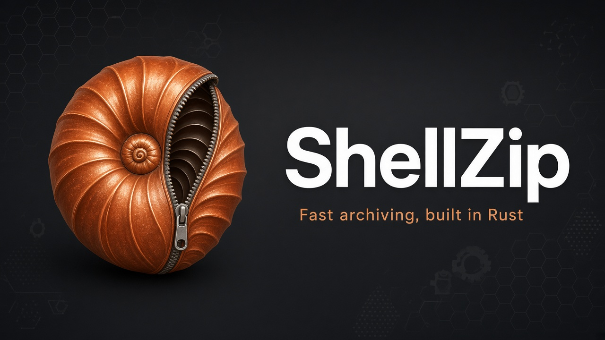
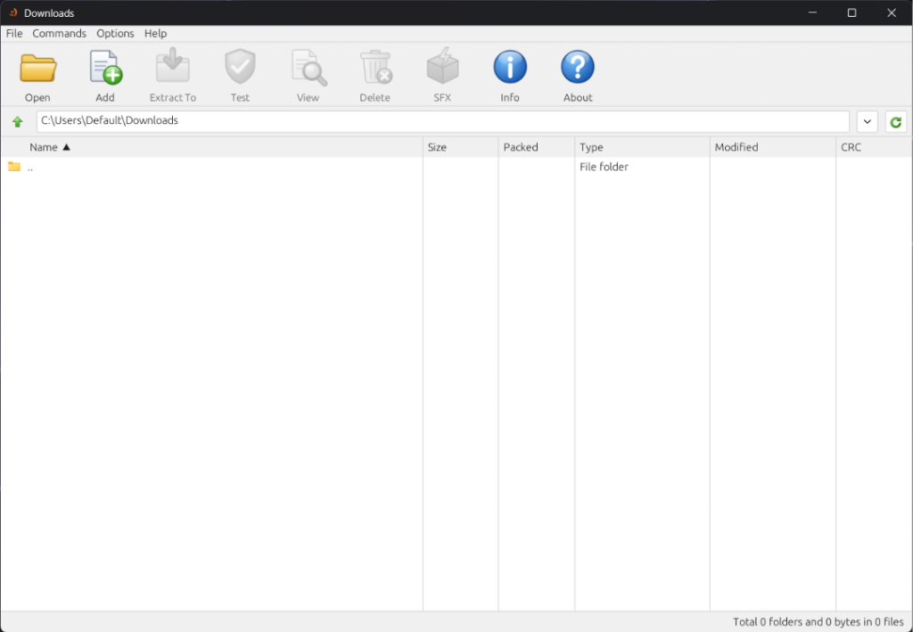
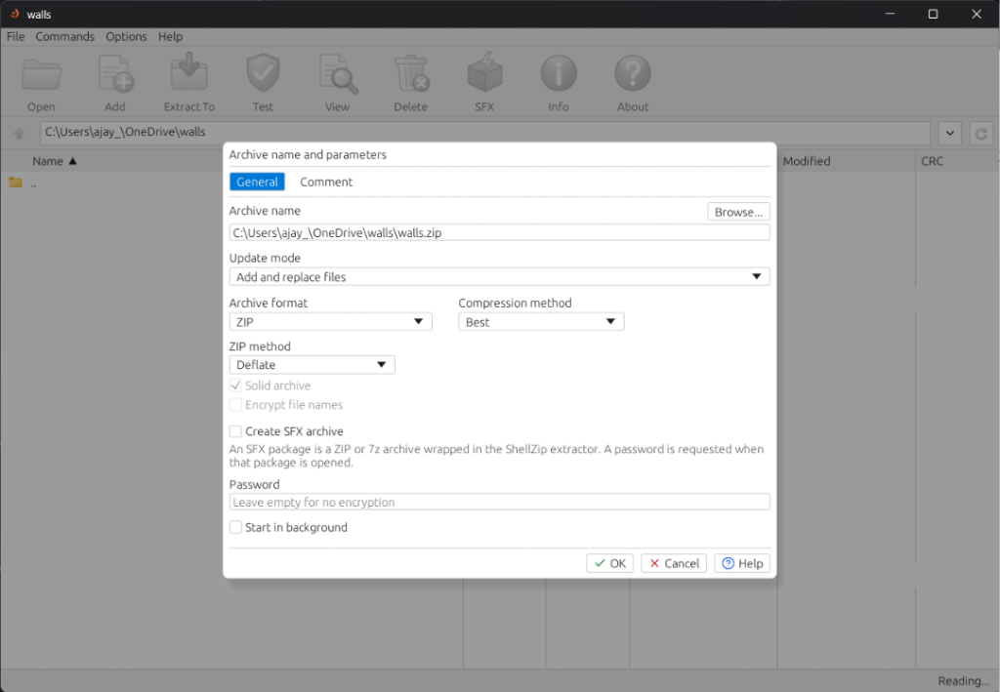
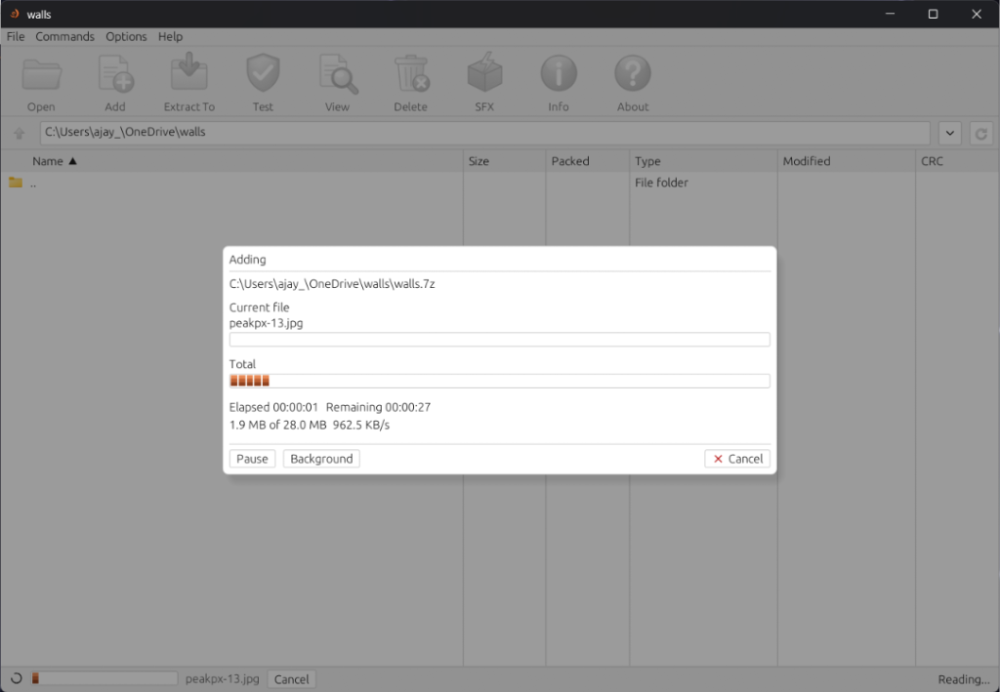
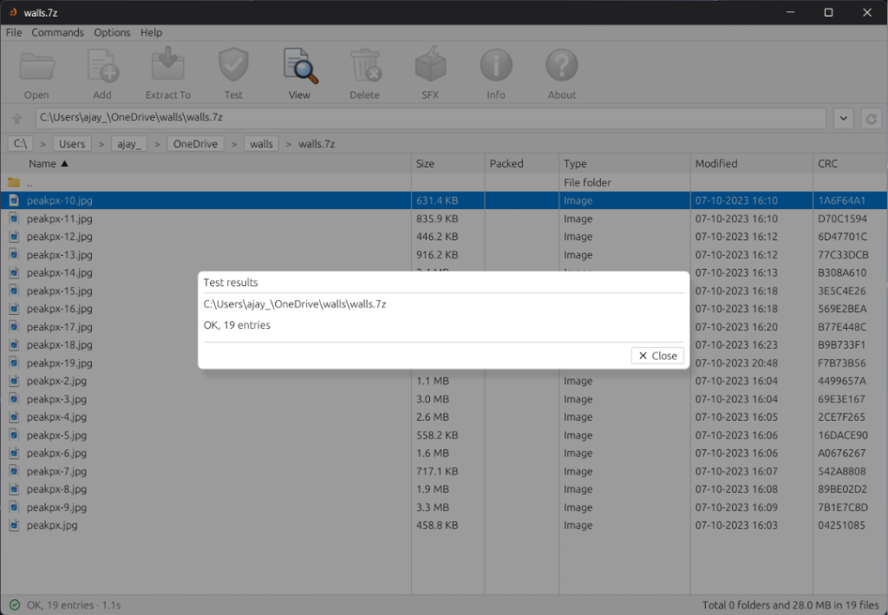
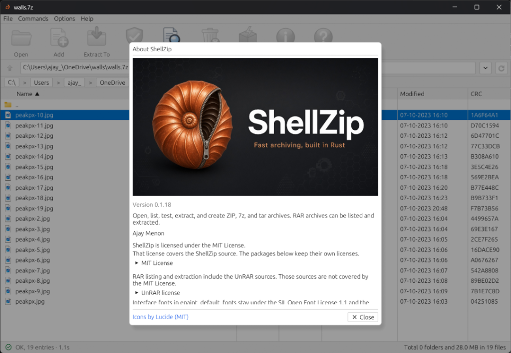

shellzip
Desktop window
Folder tree, file list, and a toolbar for Open, Add, Extract, Test, View, Delete, SFX, Info, and About. Drop a folder to pack it, or drop an archive to open it.
Fast archiving, built in Rust
A desktop window, a command-line tool, and a self-extracting stub. One library packs and unpacks the archive, and the front ends stay thin.
Windows 10 or later · 64-bit Linux · macOS on Apple silicon · MIT licence

Product
shellzip-core detects the format from the file bytes, packs and unpacks, and checks every entry name before it touches disk. The programs on top of it are small.
shellzip
Folder tree, file list, and a toolbar for Open, Add, Extract, Test, View, Delete, SFX, Info, and About. Drop a folder to pack it, or drop an archive to open it.
szip
Add, update, freshen, delete, extract, list, test, and print. Familiar switches such as -p, -mt, -sfx, and -hp work the way archive scripts already expect.
shellzip-sfx
A small stub, a ZIP or 7z payload, and a 24-byte trailer. On Windows the package opens a folder picker. Keep it under 4 GiB so Windows can start the program.
Features
Light, dark, or follow the system. The status bar keeps the result and the elapsed time after a job finishes. Passwords are asked for when needed, and they are not saved in settings.
The address bar shows the current folder. Recent archives sit under File. While a ZIP or 7z is open, that same bar walks around inside it, and Up steps back out to the parent folder.

Set the path, ZIP or 7z, the compression method, a solid block, a password, and an optional self-extractor. Leave the password empty and the archive stays unencrypted. A ZIP comment has its own page in the same dialog.

The progress window names the current file, the bytes written, and the time remaining. Choose Start in background when the file list should stay usable while the job runs.

Test checks checksums and sizes and reports the result in a dialog. Info summarizes the header without decoding every payload. Generate report writes an HTML, Markdown, or text listing of the open archive.

Also in the box
ZIP encryption covers file contents, WinZip AE-2 style, so names stay visible. 7z can hide names as well when header encryption is on.
Add and replace, update, freshen, delete, and rename members. Tar and single-file streams are written again from scratch.
Register Open, Extract to, Extract Here, and Extract Here with the archive’s folder name on Windows, macOS, and Linux.
Absolute paths, .., drive letters, and reserved names are refused before a file is created. Extract and test stop at 64 GiB uncompressed.
Wrap a ZIP or 7z from the SFX button or with szip a --sfx. The stub extracts LZMA2 and AES. Extra 7z codecs need the full program.
Packing and extracting never call the network. The optional update check looks at GitHub Releases, and only for a Velopack install.
Formats
Opening an archive sniffs the bytes, so a .zip that is actually RAR is treated as RAR. The extension matters when you are creating a new file.
| Format | Create | Extract, list, test | Password |
|---|---|---|---|
| ZIP | Yes. Deflate, Zstd, or stored | Yes | AES-256, contents only |
| 7z | Yes. LZMA2 by default | Yes | AES-256. Header encryption hides names |
| TAR, TAR.GZ, TAR.ZST | Yes | Yes | No |
| GZ, ZST | Yes | Yes | No |
| TAR.XZ, TAR.BZ2, XZ, BZ2 | No | Yes | No |
| RAR 4 and RAR 5 | Never | Yes | Yes, for extract |
| SFX, ZIP or 7z payload | Yes | Yes | Same as the payload |
RAR creation is out of scope. The UnRAR licence allows extraction, and it forbids rebuilding the RAR compressor. ShellZip will list, test, and extract RAR 4 and RAR 5.
Requirements
Published builds are x86_64 Windows, x86_64 Linux, and Apple silicon macOS. szip is a terminal program. shellzip is a desktop window on the same machine.
Rust 1.88 or newer, edition 2024. On Linux the desktop window also needs the GTK, X11, and Wayland packages in the building guide. make release writes szip, shellzip, and shellzip-sfx.
Command line
Passwords come from --password=SECRET, a silent prompt, or SZIP_PASSWORD, in that order. The value is never written to the log or a window title.
szip a backup.zip docs photos -m5 --threads 8
szip a secret.7z ledger --password --hp
szip x backup.zip -o restore --yes
szip t backup.zip
szip a payload.exe src --sfx --sfx-format zipLicence
Help → About shows the project licence, the UnRAR extraction notice, and every third-party crate linked into that build. ShellZip is not published to crates.io.
Read the MIT licence
The Microsoft Store package for Windows is signed by Partner Center. GitHub Releases also ships a Windows Setup, a Linux AppImage, a macOS app, and a portable archive.